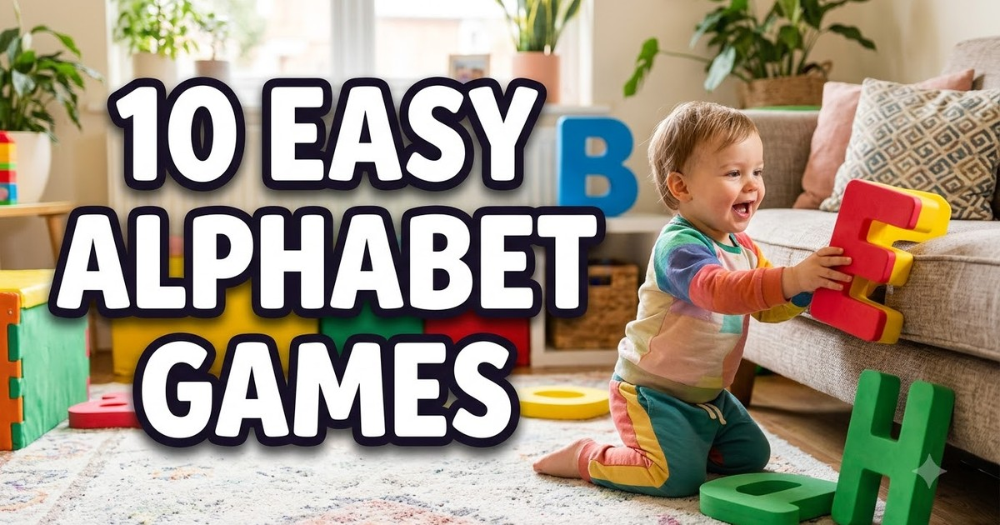
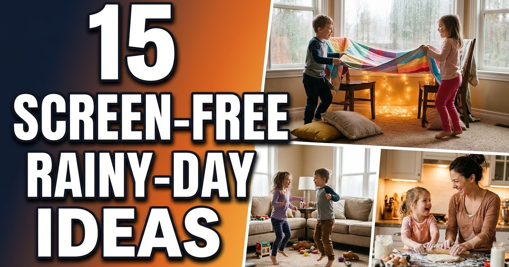
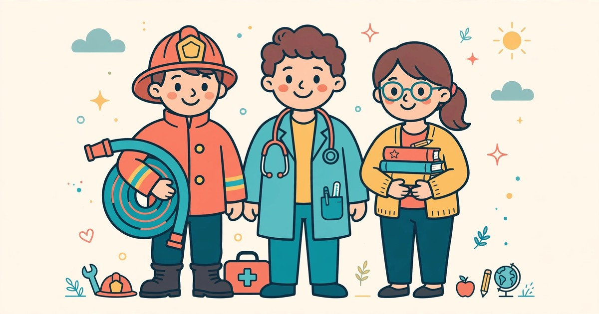

Learning through play
Benefits of Coloring for Preschoolers
Coloring looks simple, but a lot is happening while a child colors. Here are seven real benefits — and how to make the most of coloring time at home.
Simple, practical ideas for parents and preschool educators — coloring, letters, animals, space, and screen-free play for ages 2–7.
Coloring looks simple, but a lot is happening while a child colors. Here are seven real benefits — and how to make the most of coloring time at home.

Ten easy, low-prep alphabet activities for ages 2 to 4 — letter hunts, songs, tracing, coloring, and name games you can do at home with things you already have.

Lions, elephants, giraffes, and more — 15 fun animal facts for kids ages 3 to 6, each one paired with a coloring idea.

A simple, flexible daily rhythm for homeschool preschool - morning circle, letters, coloring, outdoor play, stories, and quiet time, with printables for each part of the day.

Before a child can read, they need to know their letters. Coloring gives them a gentle way to practice letter shapes, names, and sounds — one page at a time.

Rain outside, fun inside. Here are 15 simple screen-free activities for kids ages 2 to 7 — coloring, forts, scavenger hunts, baking, dancing, and quiet games.

Ten simple space facts for ages 3 to 5 — the Sun, the Moon, the planets, rockets, and astronauts — each with a coloring idea to try together.

Every day, helpers all around us keep our towns running. Meet ten of them — what they do, the tools they use, and a simple way to play and learn about each one.